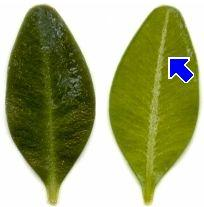

|
| Das Blatt ist sehr klein.
Es ist eiförmig und fast ungestielt.
Der Blattrand ist glatt.
 | Die Blätter fühlen sich wachsartig glatt und oft sehr fest an.
Die Blattoberseite älterer Blätter ist dunkelgrün, die Unterseite heller.
Auf beiden Seiten ist nur die Mittelader deutlich zu erkennen.
Der Buchsbaum wirft seine Blätter im Herbst nicht ab. Er ist immergrün.
|